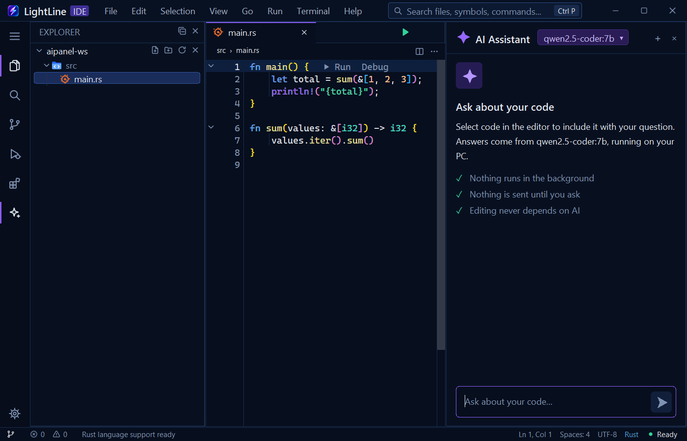

Drafted 2026-11-24. Today the assistant sees only what you send with a question: the selected code, the error you right-clicked, or 40 lines around the cursor for Alt+\. These three parts let it see more of the project, with you in control of what leaves your PC. Panel crops are drawn at the panel's logical width; dashed green outlines mark what's new.

Type @ in the question box to pick files from the project, using the same matching as Quick Open. Each one becomes a chip above the box, and its contents go with the question. Add to AI Chat on a file in the Explorer or on a tab does the same. You see exactly what will be sent before you press Enter. This works with every provider, including Ollama, because it's just text in the question.
Both read the answer as server-sent events on a worker thread. stream_answer in ai.rs picks the protocol…
.env*, *.pem, *.key, id_rsa*, credentials*, *.pfx). For these the chip turns amber, and Enter asks Send .env to Anthropic?For questions like "where is this used?", the model can ask LightLine to search the project, list folders, read files and see the Problems list. It only reads, and only inside the open folder. The first time in a chat it asks; after that every step shows as one line in the chat, so you can see what it read. Stop ends it at once.
ai_ask in ai_chat.rs (line 871) calls it on a worker thread. On an error, the panel shows the message under the answer and keeps what streamed so far…
| Tool | Does | Limits |
|---|---|---|
search | Plain or regex search across the project. This is LightLine's own project search, with .gitignore honoured in-process. | 50 matches, each with its line |
list_files | The files under a folder, optionally matching a pattern such as *.rs | 500 names |
read_file | A file, or some of its lines. An open file is read from the editor, unsaved edits included. | 400 lines / 24 KB per read |
problems | The errors and warnings language servers report, for one file or all open files | 100 problems |
.., absolute paths, links that lead out); .git/; files .gitignore hides, such as node_modules and target; and the secrets patterns above. The model is told "not allowed", and the line in the chat says so too.aiProjectAccess: "ask" (default: once per chat), "always", or "off".With project access on, the model can also propose changes: an edit to an existing file (find this text, replace it with that) or a new file. Nothing is changed when it proposes. The proposals collect in a card under the answer, each file with its counts. Review opens the existing diff view (the one Git review and Local History use) with Apply / Skip for that file. Applied changes go into the editor as one undo step per file and aren't saved: you look, then save, and Ctrl+Z takes a change back.
iter().sum() already returns 0 for an empty slice, so I only added a test for it.
iter().sum() already returns 0 for an empty slice, so I only added a test for it.
propose_edit(path, find, replace): find must match exactly once in the file's current text. Otherwise the model is told why and can retry.propose_new_file(path, content): refused if the file exists.find text no longer matches, Apply says so and leaves the file alone.App::replace_range inside begin_group/end_group, so language servers, syntax colouring and undo all see them like your own edits. A file that isn't open is opened in a tab first. A new file opens as an unsaved tab with its path, and nothing is written to disk until you save.| Measure | Effect |
|---|---|
| Startup, idle, typing | None. Nothing new runs until you send a question. |
| The @ list | Reuses Quick Open's file list (already gathered on a worker) and its matcher |
| Tool steps | On the request's worker thread. Search uses the existing project search. Open files are read from a copy of the editor's text taken on the UI thread (one copy per read, not per keystroke). |
| Network | Only to the provider you chose, only when you ask. Every file sent is shown first (part 1) or listed as it's read (parts 2–3). With Ollama, nothing leaves the PC. |
| Question | Options | Recommendation |
|---|---|---|
| When project access asks | Once per chat · before every step · never (on by default) | Once per chat, with aiProjectAccess to make it always or off. Asking at every step makes the feature tiring to use; never asking sends code to a cloud service without your saying so. |
Files .gitignore hides | Off-limits to the AI, attachable with @ · readable | Off-limits to the AI's own reading. That keeps node_modules, builds and local configs out. You can still attach one with @ on purpose. |
| Where applied edits go | Into the editor, unsaved · written to disk | Into the editor, unsaved. You see them in context, undo works, and Local History keeps a copy when you save. |
| Steps per question | 10 · 25 · 50 | 25. Enough to search, read several files and propose edits; small enough to bound cost and time. |
| How it ships | Three PRs, in order · one PR | Three PRs: 1, then 2, then 3. Each is useful alone, and each gets its own live check. |
ai_chat.rs: attachments on a question, the @ list (reusing Quick Open's files and matcher), and secrets and binary checks.render/ai_assistant.rs: the chips and the list.ai.rs: tool definitions, plus tool calls in both protocols. That means streamed tool calls in OpenAI's format, and tool_use / tool_result blocks in Claude's.ai_tools.rs for the path rules, limits, search, list and read. It's portable and unit-tested.aiProjectAccess setting (in the five places in settings.rs).replace_range.USER_GUIDE.md (AI Assistant), README, the privacy section, CHANGELOG.md.